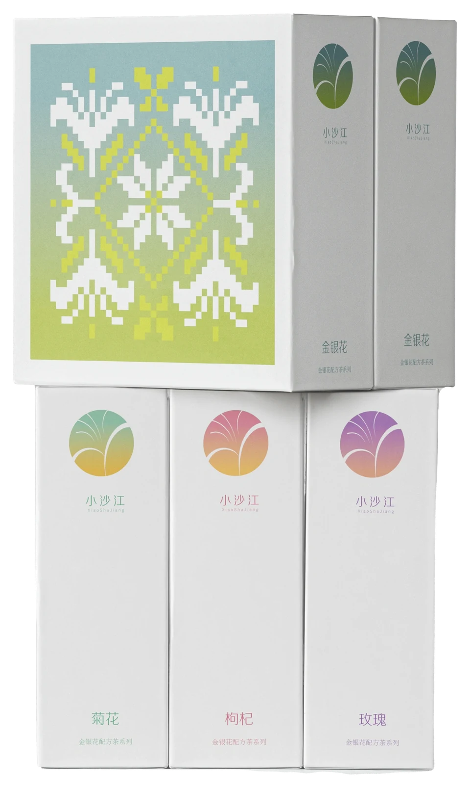
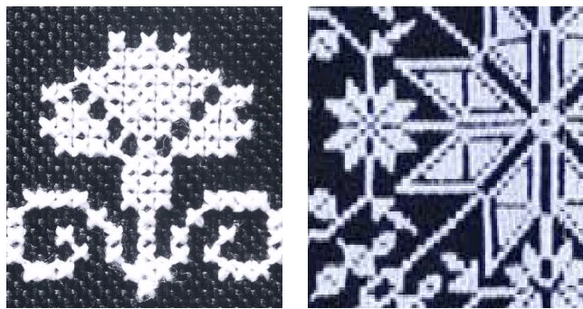
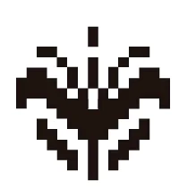
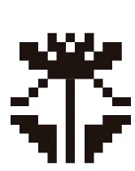
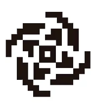
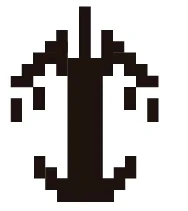
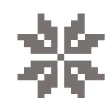
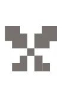

BRAND & PACKAGING / 2025.01
小沙江 · 金银花自由配方茶
把花瑶挑花的图案语言，带入一盒可以自由搭配的花茶。

01 / PATTERN DEVELOPMENT
从花瑶挑花，到花茶图案


以传统纹样为起点
花瑶挑花是湖南花瑶妇女世代传承的刺绣技艺，以工整的针脚和鲜明的色彩对比，表现花鸟、几何纹等题材。设计借鉴挑花的构图与图形语言，将花茶成分转译为可以组合的图案单元。
圆形 / 创作元素
让图形表达花茶成分
提取金银花、菊花、玫瑰与枸杞树的形态，以统一的方格轮廓建立系列识别。




方形 / 传统元素
保留挑花的传统语汇
八角花与蝴蝶作为次要元素，与花茶图形共同构成纹样。


图形元素 ＋ 构图方式 ＝ 新的图案


四种原料，四组视觉识别
用不同的渐变配色区分花茶成分。


02 / PRODUCT & PACKAGING
DIY 自由配方茶
以夏初采摘的金银花为基础，配合菊花、玫瑰与枸杞，让饮用者按照个人喜好自由选择、组合。产品内附搭配指南，将选择与搭配的过程也纳入饮茶体验。
四种原料沿用同一套图案构建逻辑，以不同色彩区分。视觉上的系列感，对应产品使用上的自由组合。
金银花与三款搭配原料以独立包装呈现，图案、色彩与原料名称相互对应；外盒将四组视觉识别集合在一起，形成完整的自由配方茶礼盒。
一盒花茶，
由自己决定搭配。